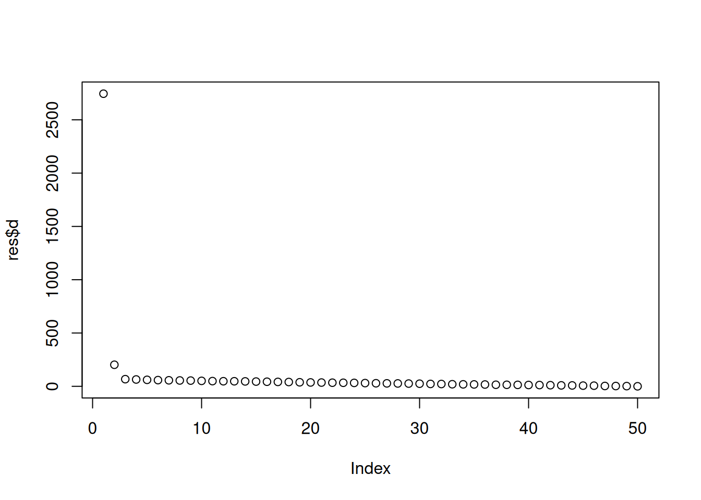

# juveniles -> sub-adultos -> adultos
L <- matrix(c(0, 1, 2,
0.3, 0, 0,
0, 0.5, 0),
nrow = 3, byrow = TRUE)
L [,1] [,2] [,3]
[1,] 0.0 1.0 2
[2,] 0.3 0.0 0
[3,] 0.0 0.5 0Se estudia una colonia de aves con tres grupos: 0-1 año (juveniles), 1-2 años (sub-adultos) y >2 años (adultos).
Definimos la matriz de Leslie por filas de tal forma:
# juveniles -> sub-adultos -> adultos
L <- matrix(c(0, 1, 2,
0.3, 0, 0,
0, 0.5, 0),
nrow = 3, byrow = TRUE)
L [,1] [,2] [,3]
[1,] 0.0 1.0 2
[2,] 0.3 0.0 0
[3,] 0.0 0.5 0Para calcular la población en 10 años, multiplicamos la matriz por si misma 10 veces, básicamente \(L^{10}\) y finalmente multiplicar por la población: \(L^{10}*poblacion_{inicial}\).
library(expm)
poblacion_inicial <- c(100, 100, 100) # 100 individuos por cada categoría
poblacion_final <- (L %^% 10) %*% poblacion_inicial
poblacion_final [,1]
[1,] 31.8330
[2,] 12.2310
[3,] 6.7365Podemos ver que la población ha disminuido. Quedan solo 31 jovenes, 12 sub-adultos y 6 adultos. Teniendo el cuenta que la población ha disminuido, el mayor autovalor asociado es < 1 y por ello la población tiende a la extinción.
autovalores <- eigen(L)
Re(autovalores$values[1])[1] 0.8168599Obtenemos que el mayor autovalor es \(0.817 < 1\). Esto significa que cada año la población total es el 81.7% de lo que era el año anterior (decrece).
estable <- Re(autovalores$vectors[,1])
estable <- estable / sum(estable)
names(estable) <- c("jóvenes", "sub-adultos", "adultos")
estable jóvenes sub-adultos adultos
0.6281170 0.2306823 0.1412007 Aproximadamente, la población se estabilizará en un 63% jóvenes, 23% sub-adultos y 14% adultos.
La SVD se usa para “limpiar” datos. Vamos a simular una señal con mucho ruido.
A_ruido <- A + matrix(rnorm(2500, sd = 5), 50, 50).A_ruido y grafica los valores singulares plot(res$d). ¿Cuántos valores singulares destacan sobre el “suelo” de ruido?Construimos nuestra matriz A de esta forma:
library(Matrix)
filas <- rep(1:50, each = 50) # Repite cada elemento 50 veces, de la forma 1,1,1,1...,2,2,2,2...50,50,50
cols <- rep(1:50, times = 50) # Repite cada bloque 50 veces, de la forma 1,2,3,4...50,1,2,3,4...50...50
A <- sparseMatrix(
i = filas,
j = cols,
x = filas + cols,
dims = c(50, 50)
)
A[1:5, 1:5] # Esquina de la matriz para comprobar que es correcta5 x 5 sparse Matrix of class "dgCMatrix"
[1,] 2 3 4 5 6
[2,] 3 4 5 6 7
[3,] 4 5 6 7 8
[4,] 5 6 7 8 9
[5,] 6 7 8 9 10Vemos que para cada índice \(ij\) es la suma de \(i+j\).
Le sumamos ruido a la matriz A con media 0 y desviación típica 5:
A_ruido <- A + matrix(rnorm(2500, sd = 5), 50, 50)
A_ruido[1.:5, 1:5]5 x 5 Matrix of class "dgeMatrix"
[,1] [,2] [,3] [,4] [,5]
[1,] -5.1774842 -1.498523 10.872041 2.452654 -0.2473112
[2,] -2.0581670 1.257955 2.310325 8.419077 5.3962126
[3,] 3.3212334 6.864901 5.161267 10.426980 2.6031923
[4,] 8.1662562 18.909583 0.799646 -3.501441 13.0807706
[5,] 0.4031502 4.819362 1.928229 8.334553 4.3940126res = svd(A_ruido) # Aplicamos SVD
print(res$d) # Valores de la diagonal [1] 2745.1257626 202.1336999 66.9051172 64.0552654 60.7645453
[6] 58.1182263 56.3716360 54.8142100 53.6441873 51.0772195
[11] 48.8424313 47.5313244 47.2539993 45.9890042 44.4623765
[16] 43.0139556 41.3793704 40.2790098 37.7608268 36.1959114
[21] 35.1834280 33.8448181 33.1982677 32.0604328 30.1965096
[26] 28.6359834 27.6628507 26.8107630 25.6377421 24.4319445
[31] 22.2758577 21.5172259 19.4483316 18.4720131 17.6632372
[36] 16.7422939 14.5732876 14.3036569 13.5615113 12.4108782
[41] 11.7140862 10.4066958 8.6669083 8.1050468 6.3612895
[46] 5.9627678 3.1439000 2.6118272 1.8626484 0.1129907plot(res$d)
Podemos ver que los primeros valores (sobre todo el primero), son muy grandes. Realmente solo destacan los dos primeros valores singulares, con valor de 2745 y 187.
En este caso vamos a reconstruir la matriz original usando los \(k=2\) valores singulares más grandes. Seguimos la fórmula \(A_{k}=U_{k}*D_{k}*V^{T}_{k}\):
A_rec <- res$u[, 1:2, drop = FALSE] %*% diag(res$d[1:2]) %*% t(res$v[, 1:2, drop = FALSE])
print(A_rec[1:5, 1:5]) [,1] [,2] [,3] [,4] [,5]
[1,] -3.9180180 3.766910 0.8338319 3.000652 3.017079
[2,] -3.0556083 4.413077 1.6034018 3.718135 3.770614
[3,] 1.3344028 7.826708 5.6011776 7.486588 7.725926
[4,] 2.2326916 8.359697 6.3122803 8.103103 8.376226
[5,] -0.0596003 7.209206 4.6330766 6.725638 6.918182error_original <- sqrt(sum((A - A_rec)^2 / 2500))
error_ruido <- sqrt(sum((A_ruido - A_rec)^2 / 2500))
cat("\nError respecto a la matriz original (usando RMSE): ", error_original, "\n")
Error respecto a la matriz original (usando RMSE): 1.377472 cat("Error respecto a la matriz con ruido (usando RMSE): ", error_ruido)Error respecto a la matriz con ruido (usando RMSE): 4.845647Hemos usado la fórmula de la raíz del error cuadrático medio (RMSE). Podemos ver que el error respecto a la matriz original con ruido es de casi 5, que es la desviación típica del ruido que añadimos a la misma. Esto significa que SVD ha detectado el ruido de los datos, que si comparamos la matriz original con la ruidosa, la diferencia es el ruido.
Respecto a la matriz original pura, obtenemos un error de 1.35, por lo que SVD a bajado el ruido de un error 5 a uno de 1.35. Esto significa que SVD ha descartado un 73% del ruido: \(\%ruido_{eliminado}=1-\frac{1.35*100}{5}\).